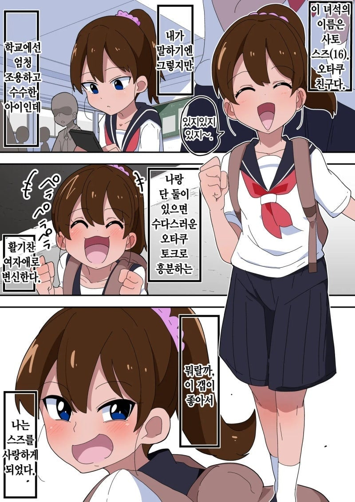
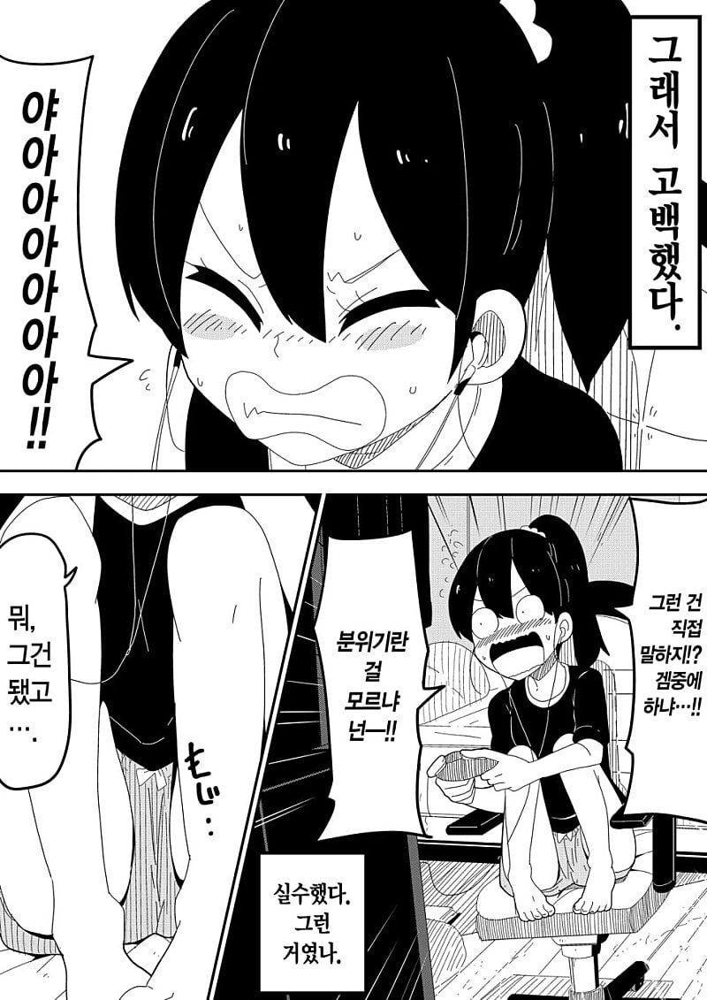
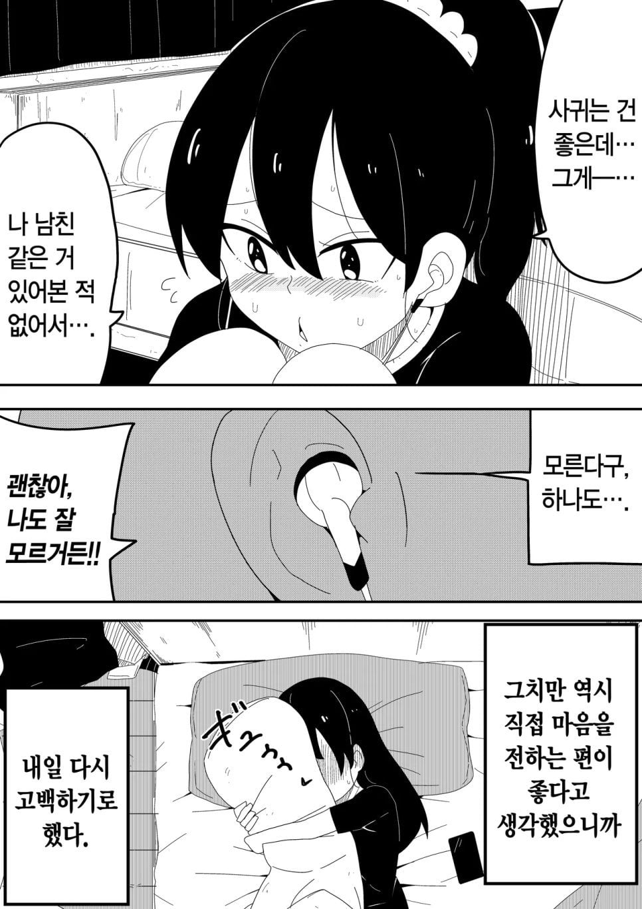
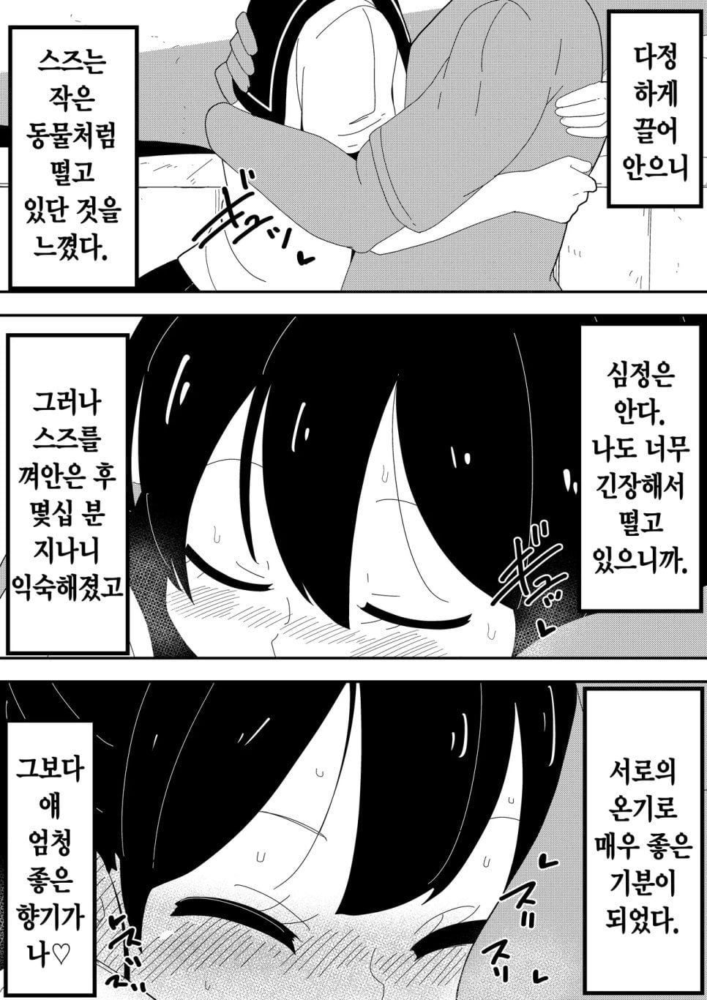
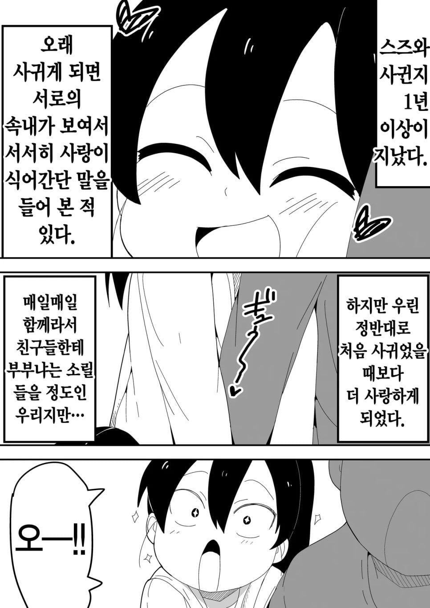
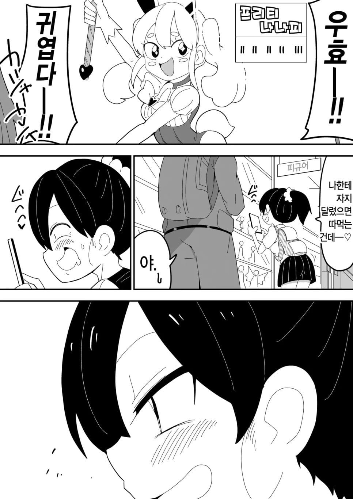
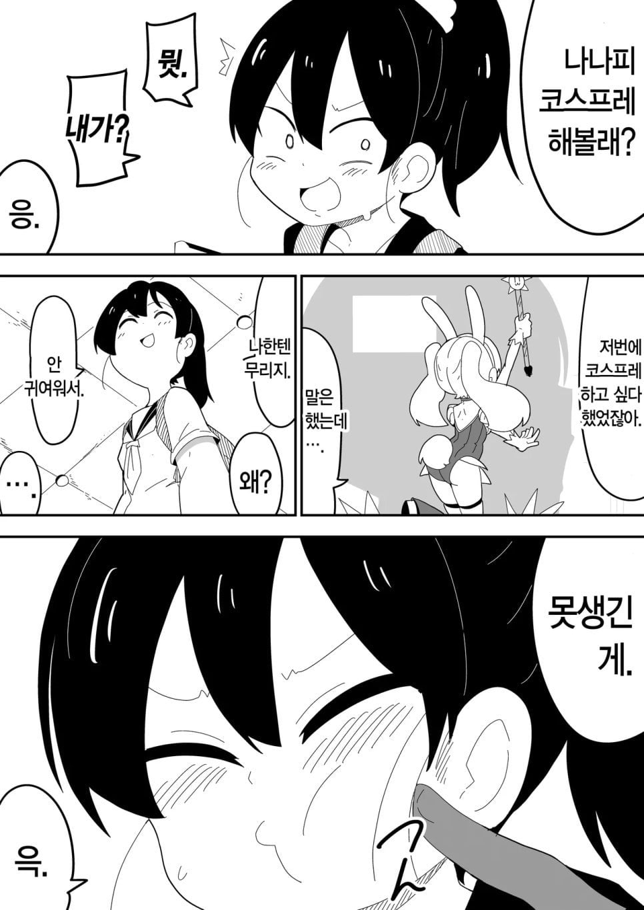
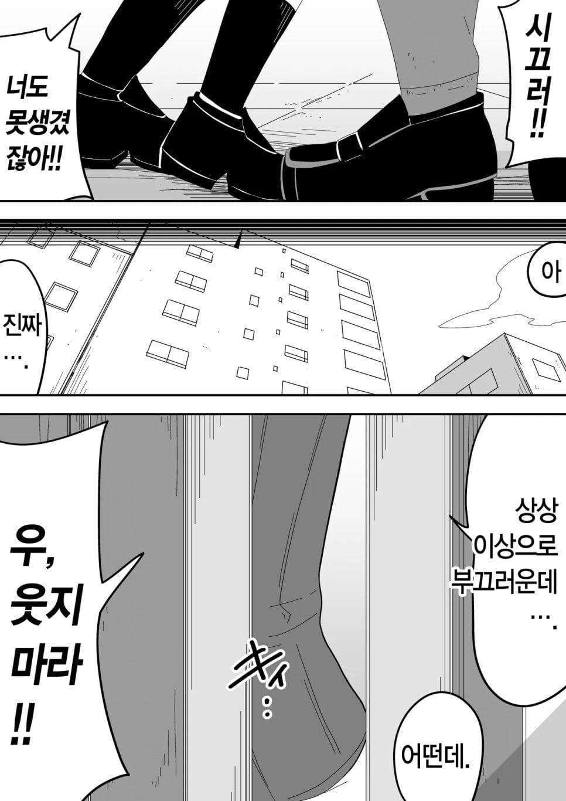
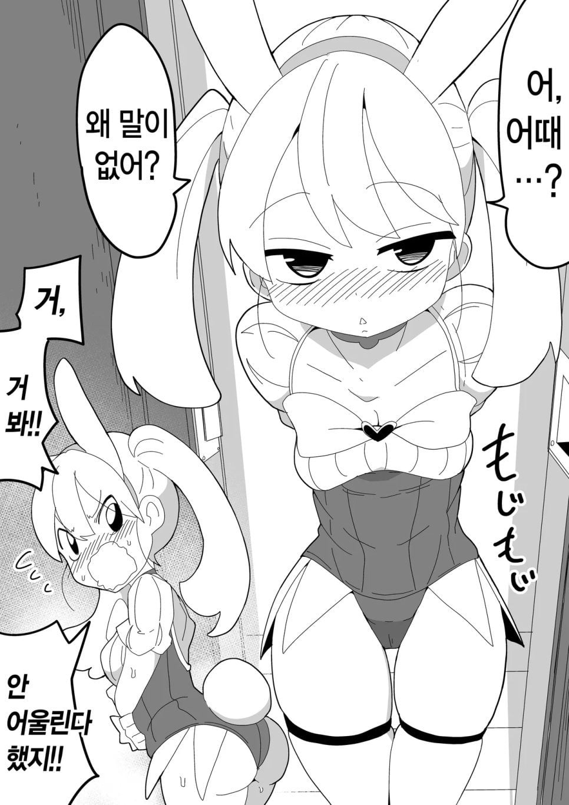
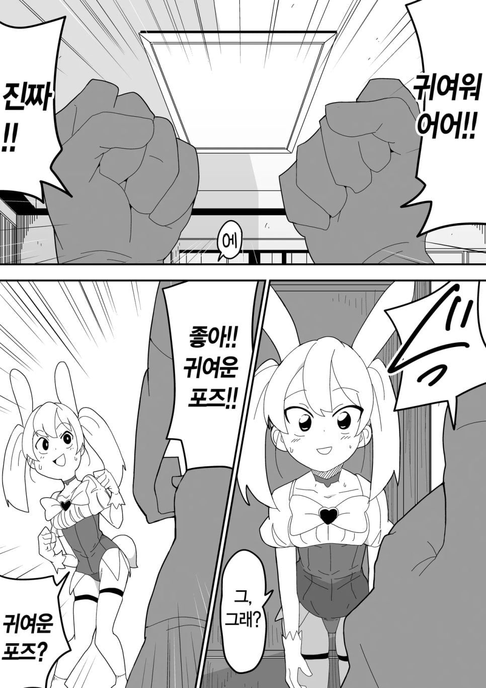
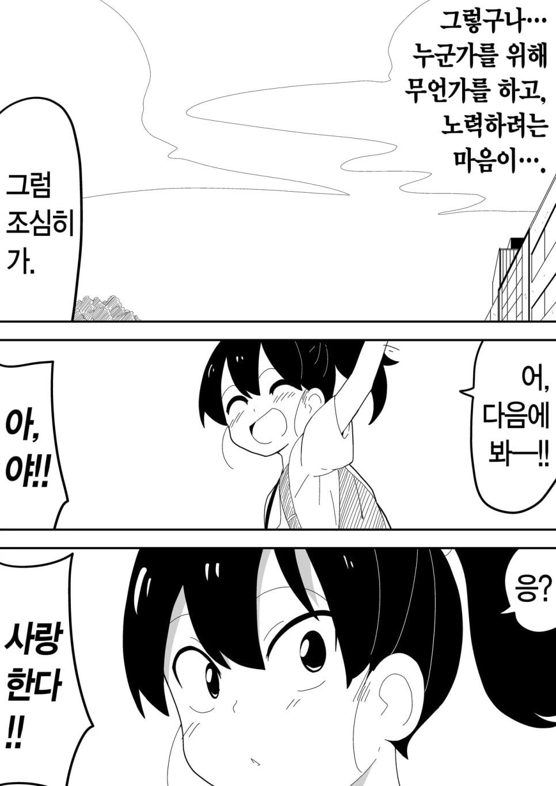
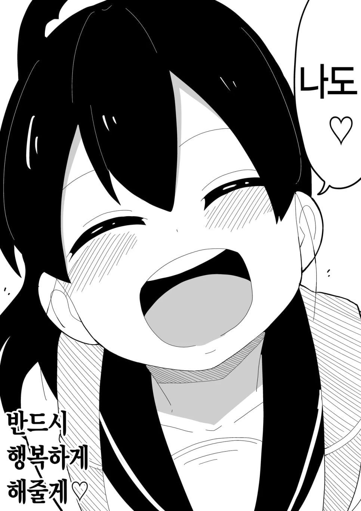
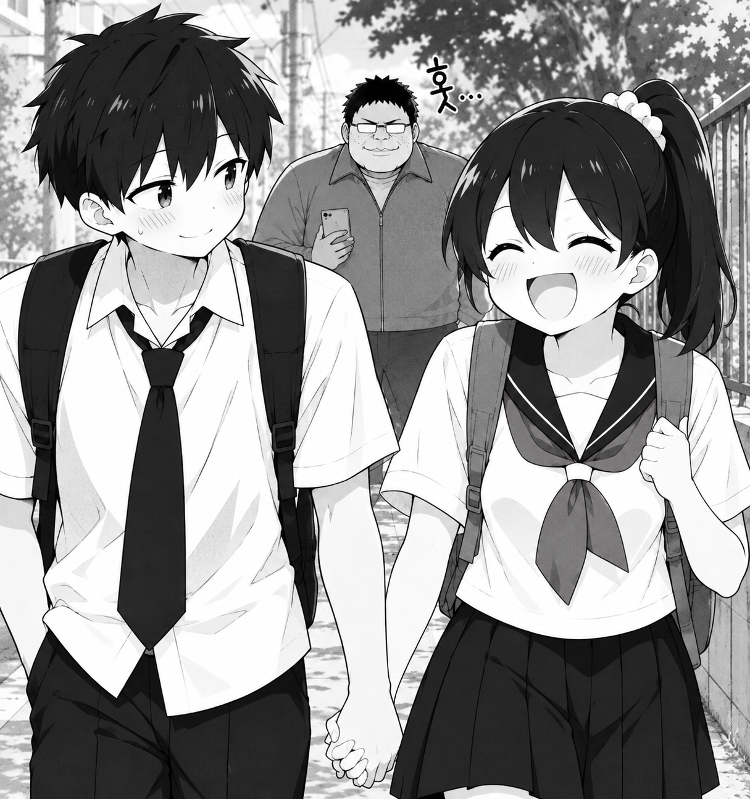
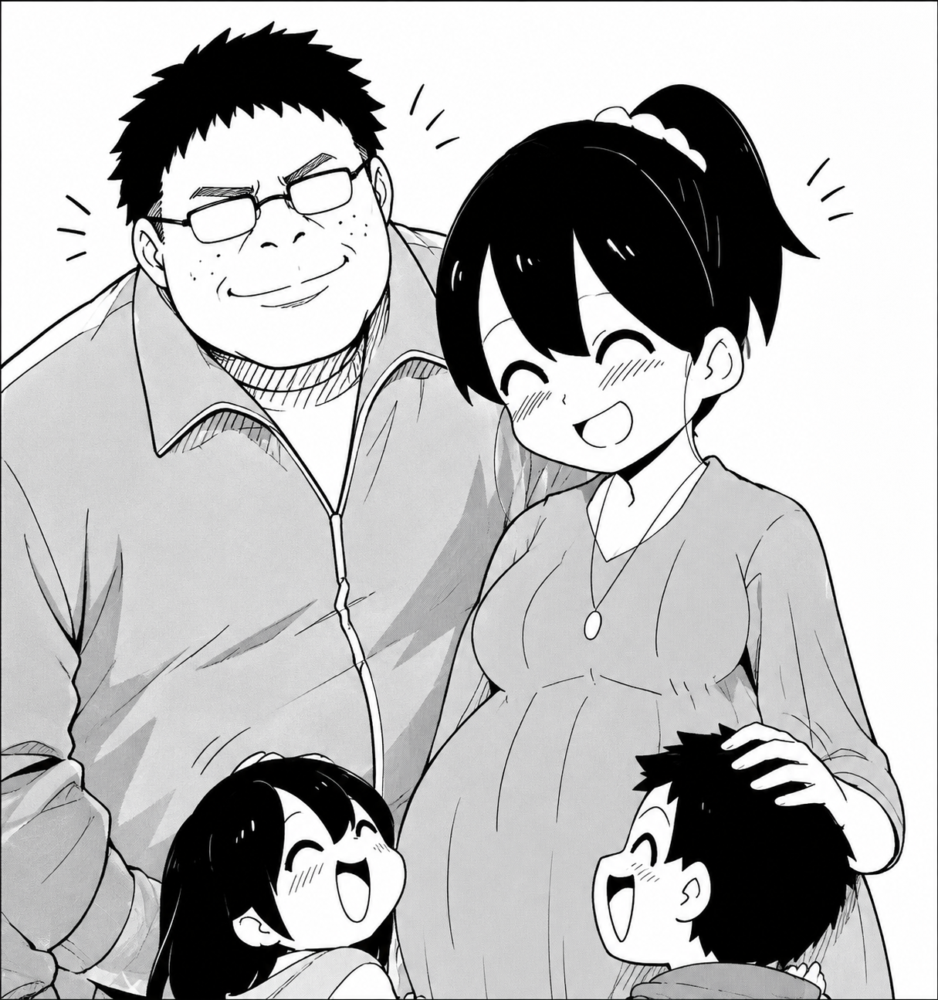














너의 아이디를 기억하고 항상 붐업을 주겠다 김개붕
?
씨발년아
본인이 그린 것도 아니고 ai 딸깍으로 남의 원작 손대는 건 ㄹㅇ 예의가 없네
순애물 진짜 설레지 ㅋㅋ
ㅋㅋㅋㅋㅋ 반응 좋구만
굿
처남과 여동생이 결혼 후 그 둘 사이의 100%친자인 조카를 흐뭇하게 바라보는 삼촌입니다만
아이 씨발 진짜ㅋㅋㅋ
")
")
ㅋㅋㅋㅋㅋㅋ 댓글반응 개웃겨서 불쾌한거 사라짐
뒤에는 오빠 아녀? 여동생이 이상한 놈팽이 만나는가 감시하는
아이 개씨발